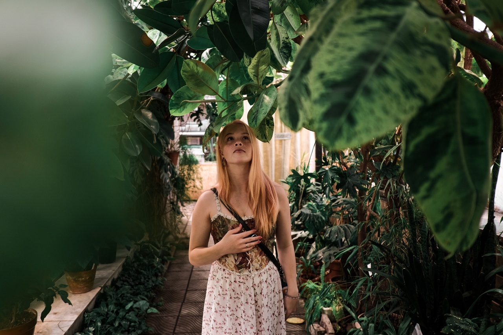
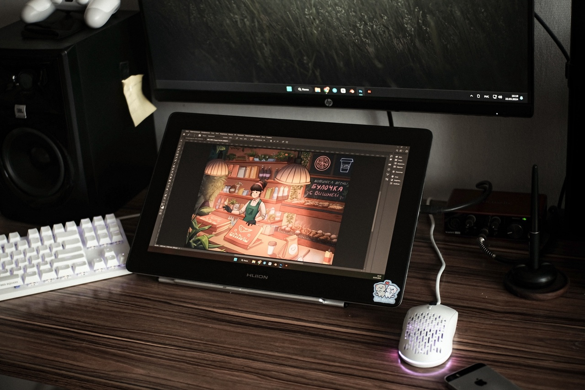
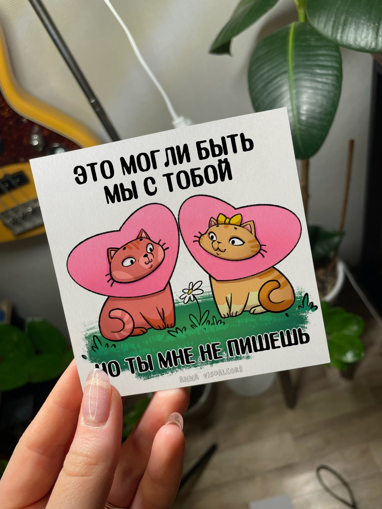

Клиентов хватает и денег соответственно. Уже понимает рынок, постепенно повышает стоимость услуг. Разница до курса и после заметна.
Такими результатами поделилась Анна Владимирова – дизайнер-иллюстратор из Кирова.
Мы взяли у нее короткое интервью:
— Аня, ты в начале своего пути, расскажи, что было до курса и как сейчас?
— До курса не знала как начать вести соцсети, как продавать, общаться с клиентами. Про деньги и говорить нечего)) когда-то 5 в месяц, когда-то 15, когда-то 0. По началу, на курсе думала, что я не туда попала. Я иллюстратор и мне, по идее, тут ничем не помогут. Но, в итоге, знания по продвижению ВК, маркетингу, копирайтингу помогли мне.
Начала вести соцсети и правильно писать посты – люди замечают, интересуются, становятся клиентами. Знаю как работает группа Вк (сообщество) – из этого родилась услуга «дизайн и упаковка группы ВК». Маркетинг помогает общаться с клиентами и решать их проблемы с помощью моих услуг)
Сейчас у меня несколько проектов, которые развиваются потихоньку. Зарабатываю в месяц от 20 до 60 т.р.
— Ого, неплохой подъем) Получается с 0 до 60 тысяч рублей, так?
— Ну, у меня нестабильная работа, иногда отказываюсь от заказов. Но заказы регулярные, в любой момент могу не работать или работать)
Если бы работала 8 часов в день и 5 дней в неделю, легко зарабатывала бы 60-70. Со временем знаю, что цена повысится и заработок будет от 70 до 100 тысяч. Дело времени, а ещё немного поработать надо)

— Скажи, а с такой стабильностью, повышением дохода смогла позволить себе нечто, что раньше не могла? Купить, попробовать, съездить?
— Ну, пока что все в дело) Мы смогли собрать хороший компьютер и сейчас собираемся купить дорогой планшет, стоимость компьютера оценивается примерно в 80 тысяч, планшет 45 тысяч, и ещё остается на поездку в другой город, чтобы провести там Новый год))
— Круть, молодцы)) А сейчас что предпринимаешь, чтобы себя продвигать? Реклама, посты часто пишешь, что-то ещё?
— До уроков по рекламе я пока не дошла) Так как сейчас сильно загружена работой и больше не смогу, и так приходится отказывать) Знания которые я получила в самом начале курса мне очень помогают.
Посты сейчас стала писать почаще, есть телеграмм канал, где просто делюсь своей жизнью, людям почему-то интересно и они остаются. Если выкладываю пост, то в первую очередь там. Если реакций много, значит можно выложить и в ВК)
А рекламу, повторюсь, пока не использую, просто потому, что не надо. И так работы хватает от нескольких проектов.
Не сказать, что я веду активную жизнь вне соцсетей. Хотя летом выходила на ярмарки со своими товарами и мастер-классами. Оттуда пришло 20% моей аудитории.
Планирую сейчас налаживать процессы работы, чтобы было быстрее и удобнее для меня и клиента. Потом уж и реклама, наверное)
— Всё, остался последний вопрос, сколько сейчас зарабатываешь? Сколько в среднем в месяц? Сколько клиентов? А вот примерно сколько за год было прошедший заработано?
— Хмм. В цифры не вдавалась, честно.
В среднем клиентов в месяц от всех проектов моих 3-6, 1-2 крупных заказа поступает и остальные по мелочевке. В среднем в месяц тысяч 30 наверное.
Но и в полную силу я не работаю) За год тоже не скажу сколько, не знаю, если только в среднем посчитать.

— Пожелаешь что-нибудь будущим ученикам и сомневающимся?
— Знания, которые я получила на курсе, универсальны. Пригодятся любому и будут полезны во многих делах. Также необходимо знать как эти знания применять, и Евгения Брун также помогает в этом.

Я ничего не потеряла, купив этот курс, но обрела сразу много. Я стала разбираться в маркетинге, немного в таргетинге, в копирайтинге, да ещё и заработала благодаря этим знаниям неплохо))
Плюсы во всём, только надо трудиться)
— Вау, здорово, спасибо тебе огромное! Искренне желаю - успехов и настроения)))